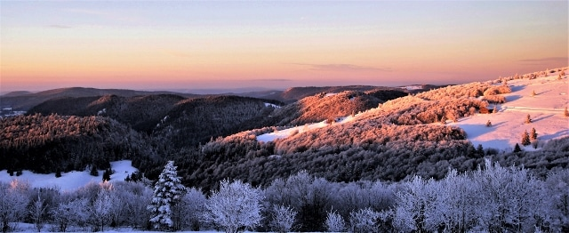

Qui suis-je ?
Bonjour, je m’appelle Louis Gehringer, j’ai 25 ans et je suis en mastère spécialisé à Audencia.

Ma vallée de Munster : zéro bunker, beaucoup de neige
Enfant, j’étais du genre à ne pas tenir en place. Alsacien, les montagnes à portée de main, j’ai fait du ski en compétition. Puis dix ans de tennis, un peu de course à pied, un peu de vélo de route. Bref, j’ai testé beaucoup de sports. Mais un seul a réussi à me pourrir la vie durablement : le golf.
Tout commence à mes 10 ans, sous l’impulsion de mon père. À l’époque, je pense que c’est simple : une balle immobile, un club, un trou. Que pourrait-il mal se passer ? Tout, en réalité. Le golf est un sport diabolique : complexe, exigeant, parfois humiliant. Et pourtant, on y revient toujours.
Enfin, pas tout de suite. Pendant des années, j’y vais par obligation. Pour moi, c’est plus un fardeau qu’un exutoire. En 2016, je pose donc les clubs et je ne joue plus qu’une fois tous les trois mois environ, soit juste assez pour me rappeler pourquoi j’avais arrêté.
Puis arrive l’été 2026. Mon stage terminé, je me retrouve avec trois mois de vacances et un golf à 20 minutes de chez moi, à Rouffach. Je prends alors une décision parfaitement raisonnable : plus de quatre heures de golf par jour, et y penser jour et nuit le reste du temps.
Chaque soir, j’en suis certain : j’ai enfin percé le secret du swing de Tiger Woods. Chaque lendemain, le parcours me rappelle que non, pas du tout. Vraiment pas.
Trois mois plus tard, les résultats ne se font pas attendre : j’ai la nette sensation d’être moins bon qu’au début de l’été.
Trois mois d’efforts pour régresser. Sur le papier, c’est un échec. En réalité, c’est tout l’intérêt de ce sport.
Car à force de se battre contre une petite balle blanche, on apprend beaucoup sur soi-même. Et ces leçons servent aussi au travail : résister à la pression, affronter une tâche très exigeante, avoir l’impression de reculer à chaque étape, et découvrir que plus on apprend, plus il reste à apprendre.
Finalement, le golf est une excellente préparation au monde du travail. La seule différence, c’est qu’au bureau, personne ne vous regarde chercher votre balle dans les arbres.